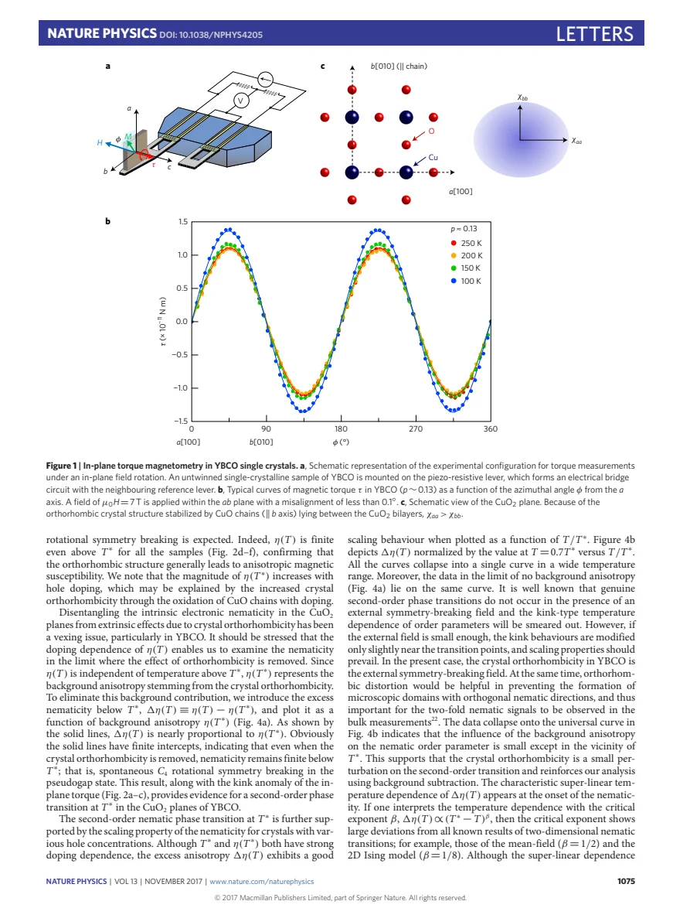
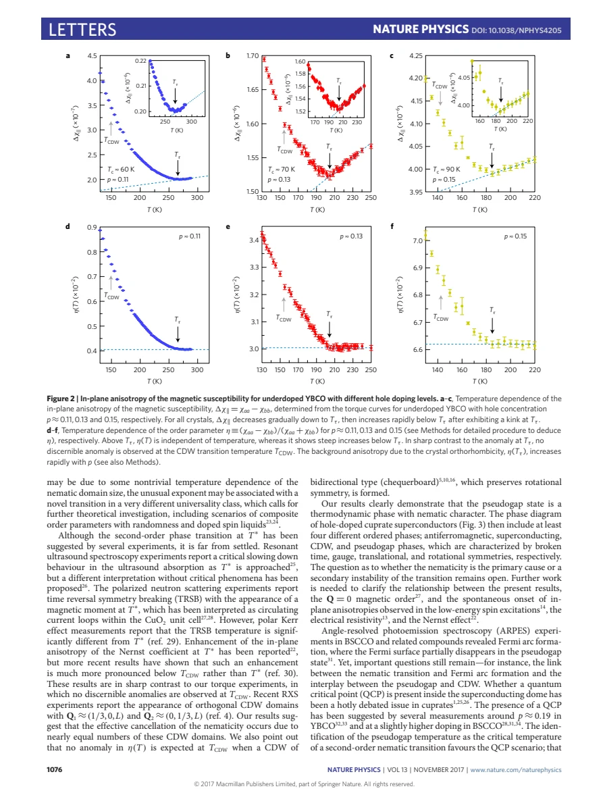
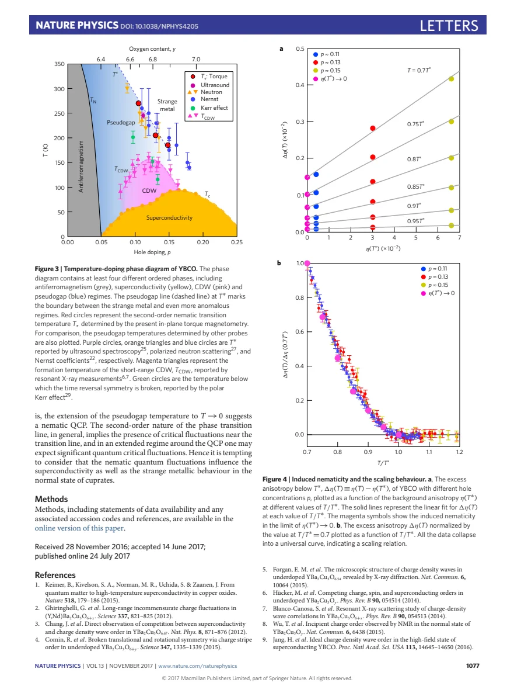

experiment · Sato · supplied source 2017
Thermodynamic evidence for a nematic phase transition at the onset of the pseudogap in YBa₂Cu₃Oᵧ
In-plane torque reveals additional susceptibility anisotropy near the pseudogap onset, beyond the background already imposed by YBCO chains.
The question: How can electronic nematicity be investigated when the crystal already breaks fourfold symmetry?
Before you start: the few terms you need
- nematicity: directional electronic anisotropy without requiring a new spatial period
- orthorhombicity: inequivalence of crystallographic a and b axes
- magnetic torque: response sensitive to anisotropy of the susceptibility tensor
See → explain → test
Understand it in four pictures.
Picture 1 / 4
Start with existing chain anisotropy
Look for: Distinguish the CuO₂ plane from CuO chains parallel to b.
Swipe across the picture to read every label, or enlarge it below.
- Crystal background
- Additional electronic response
The experiment does not cool an exactly tetragonal sample through a pristine C₄ transition.
A nonzero twofold signal above T* is expected from YBCO's orthorhombic structure.
Picture 2 / 4
Rotate a field in the plane
Look for: Connect the twofold torque amplitude to χaa − χbb.
Swipe across the picture to read every label, or enlarge it below.
- Untwinned crystal
- Rotate 7 T in-plane field
- Measure twofold torque
- Infer Δχ
Linear susceptibility regime; near-Tc nonlinear contributions are excluded.
Precise in-plane alignment and removal of nonlinear superconducting contributions are essential.
Picture 3 / 4
Subtract the normalized background
Look for: Compare η above and below the kink temperature.
Swipe across the picture to read every label, or enlarge it below.
- Above T*
- Below T*
Teaching comparison of the source's normalization; no invented onset exponent.
The excess Δη is defined relative to η(T*), rather than treating every anisotropy as new order.
Picture 4 / 4
Test an extrapolation
Look for: Follow excess anisotropy versus background across several dopings.
Swipe across the picture to read every label, or enlarge it below.
- Kink and scaling data
- Extrapolate chain background to zero
- Proposed nematic pseudogap onset
No actual tetragonal YBCO control is measured; whether nematicity is primary remains open.
A finite zero-background intercept supports the authors' spontaneous-nematic interpretation, with an extrapolation assumption.
Predict before revealing
A twofold torque response is present above T*. What is the first interpretation to account for?
Choose an answer, then compare the reasoning.
The new inference concerns excess anisotropy below T*, after treating the existing crystal background.
Read the answer
Pre-existing orthorhombicity from the chains The new inference concerns excess anisotropy below T*, after treating the existing crystal background.
Go deeper Follow the full argument
Why ordinary twofold symmetry is insufficient
Sato and colleagues examine untwinned underdoped YBCO crystals with hole concentrations around 0.10–0.15. YBCO already has inequivalent a and b directions because CuO chains run along b. Its normal crystal structure therefore supplies an explicit symmetry-breaking field for any electronic nematic tendency in the planes. A nonzero in-plane susceptibility difference cannot alone establish a newly formed nematic state. The paper seeks an extra component that turns on at the pseudogap temperature. Its central question is how to separate that electronic behavior from the structural background, rather than whether an ideal fourfold crystal becomes twofold. Doping also changes the chains and background anisotropy, so comparing several compositions is an important part of the analysis.
What the torque measures
A microcantilever measures magnetic torque as a 7 T field rotates within the ab plane. Alignment better than about 0.1° suppresses contamination from the much larger out-of-plane anisotropy. The dominant twofold harmonic yields Δχ = χaa − χbb; the measured orientation is consistent with χaa exceeding χbb and negligible off-diagonal χab. The average in-plane susceptibility is reconstructed using additional susceptibility information described in Methods. This enables the normalized anisotropy η = Δχ/(χaa + χbb), rather than comparing only raw torque amplitudes. Near Tc, higher harmonics and nonlinear superconducting fluctuations complicate the linear-response interpretation and are excluded from the relevant onset analysis. Thus the thermodynamic inference rests on a specific linear susceptibility regime and careful geometry. The reconstruction also uses powder-averaged and out-of-plane susceptibility information, so η contains more experimental input than the torque amplitude alone.
The kink and excess anisotropy
On cooling, Δχ initially decreases but turns upward below a kink temperature Tτ that matches the pseudogap scale T*. Meanwhile the average spin response continues to decrease. The normalized η is approximately temperature independent above T* and grows below it. The authors define the excess Δη(T) by subtracting η(T*), which represents the structural background within their analysis. Across measured dopings, the excess scales approximately with that background. Extrapolation to zero background produces a finite intercept below T*, supporting an intrinsic component beyond chains alone. This is an inference from the composition series: it is not an observation made on a separate tetragonal YBCO sample. Its validity depends on treating orthorhombicity as a sufficiently small perturbation and on the chosen background subtraction.
Scaling and the transition interpretation
After normalizing Δη by its value at 0.7T*, the curves approximately collapse as functions of T/T*. The onset is superlinear and differs from simple mean-field or two-dimensional Ising order-parameter forms. The authors discuss domain growth and more complex order as possible explanations, leaving the universality class unsettled. They interpret the kink, finite extrapolated intercept and scaling as evidence for a second-order nematic transition at the pseudogap onset. They also acknowledge that an explicit symmetry-breaking field normally rounds an ideal symmetry transition. The chain background may select domain orientation and help a bulk signal become visible, but this same fact makes the interpretation conditional on the small-perturbation treatment. Neither the torque nor the collapse uniquely determines the microscopic nematic order parameter.
Relation to charge order and other pseudogap probes
No corresponding anomaly is resolved at the lower charge-density-wave onset in these measurements. That does not prove charge order is absent or isotropic locally: nearly balanced orthogonal stripe domains can cancel the bulk anisotropy, and a bidirectional pattern can also preserve an average rotational response. The paper compares its onset scales with other pseudogap probes, whose anomalies need not all coincide. Whether nematicity drives the transition or emerges as a secondary response remains open. A proposed quantum-critical continuation near higher doping is not directly measured by this limited composition series. Use the experiment as a thermodynamic anisotropy constraint alongside shifts, relaxation, transport and diffraction, keeping each observable's sensitivity and the chain-background extrapolation explicit.
Translate the mathematics Key equations and symbol meanings
τ/V = (μ₀H²/2)[(χaa − χbb) sin 2φ − 2χab cos 2φ]
Symbols: φ: in-plane field angle; V: sample volume; χij: susceptibility tensor.
Per-volume teaching form of the linear-response torque relation. The paper's nearly pure sin 2φ response yields Δχ, with accurate in-plane alignment required.
η = (χaa − χbb)/(χaa + χbb); Δη(T) = η(T) − η(T*)
Symbols: η(T*): normalized background at the inferred onset.
Separates the additional temperature-dependent anisotropy from the pre-existing orthorhombic contribution within the source's analysis.
Read the evidence A guided look at the original figures

Open the full original page ↗

Open the full original page ↗

Open the full original page ↗
What this paper does—and does not—establish
- Orthorhombic background explicitly breaks fourfold symmetry and rounds a pristine transition.
- Zero-background interpretation uses extrapolation and a small-perturbation assumption.
- Primary versus secondary nematicity and microscopic order remain unresolved.
Explain it back.
Try answering aloud before opening the explanation.
What is the measured anomaly?
A kink and rapid growth in additional in-plane susceptibility anisotropy near T*, despite a decreasing average response.
Was the tetragonal limit measured directly?
No. It was inferred by extrapolating excess anisotropy versus the structural background across dopings.
Does no torque anomaly at TCDW exclude stripes?
No. Orthogonal domains or bidirectional order can have little net anisotropy.
Connect the next paper.
Source version, reading coverage and preservation
Complete six-page PDF text read including Methods on page 6; rendered pages 2–4 inspected for geometry, onsets, normalization and extrapolation.
Reviewed body pages: 1, 2, 3, 4, 5, 6. Separately referenced Supplementary Information/figures are absent from the supplied PDF; cited external probes are not independently reviewed.
Original file retained byte for byte. SHA-256: 61856c718e5af576bb4b475cb7a0a659492fc6575e9bc29ff1b4f0df4cfd377d
Filename: NatPhys - Sato - Nematic transition at pseudogap onset in YBCO - 2017.pdf.